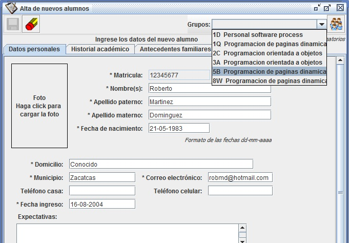
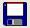
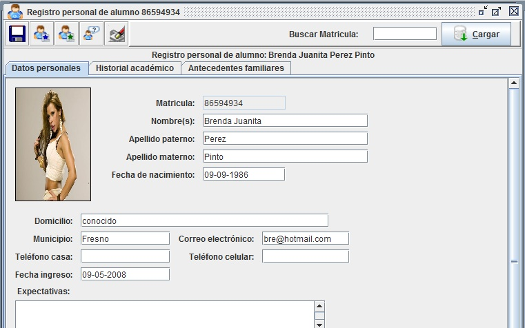
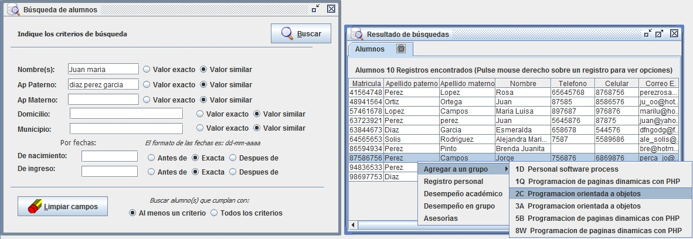
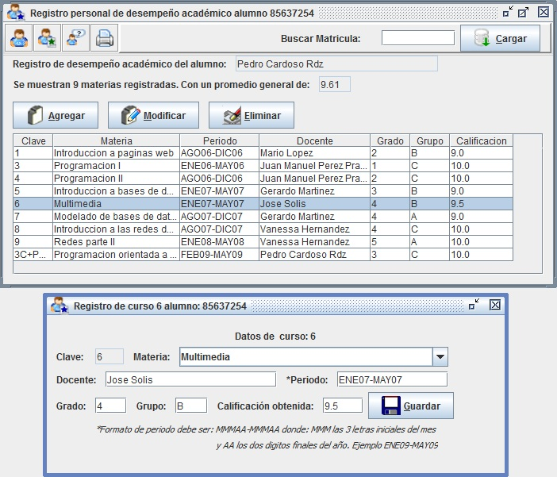
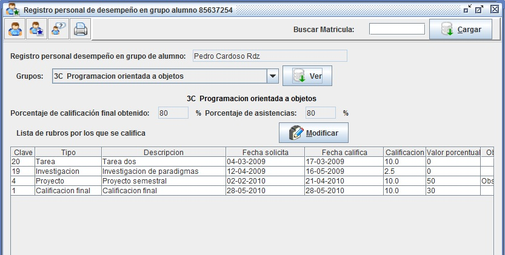
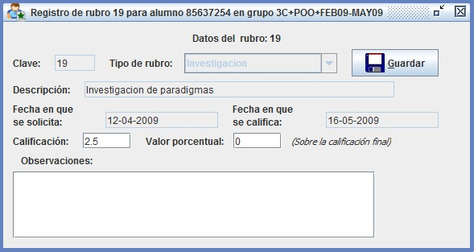

Como iniciar |
Sistema |
Alumnos |
Grupos |
Asesorías a tesistas |
Catalogo bibliográfico
Crear alumno |
Registro alumno |
Buscar alumno |
Desempeño académico alumno |
Desempeño en grupo alumno
El sistema proporciona el soporte necesario para que pueda guardar los datos de los alumnos utilizando una estructura de registros personales para cada alumno, una vez que un alumno tiene su registro en el sistema puede ser agregado a uno o varios grupos así como puede crear su registro como alumno tesista.
Crear un nuevo registro de alumno
Para crear el registro de un nuevo alumno:

- Haga click en el menú Alumnos
- Haga click en el submenú Alumnos
- Haga click en el submenú Alta de alumno
- En la ventana Alta de alumnos nuevos capture los datos personales del alumno
La matrícula debe ser una cadena de 8 dígitos, opcionalmente puede cargar un archivo de imagen (jpg, gif o png) con la foto del alumno, para esto haga click sobre el espacio designado a este fin.- Si cuenta con datos de antecedentes familiares captúrelos en el área correspondiente
- Si cuenta con datos de historial académico captúrelos en el área correspondiente
- Haga click en el botón Guardar 
- Si ya ha creado registros de Grupos puede agregar el alumno a un grupo vigente
- Elija el grupo al cual desea agregar el alumno de la lista desplegable en la esquina superior derecha
- Haga click en el botón Agregar el alumno al grupo seleccionado
- El registro de un alumno se hace una sola vez y una vez hecho puede agregar el alumno a uno o varios grupos a su cargo así como crearle su registro de tesis en casos que así lo requiera
- Si desea crear un nuevo registro haga click en el botón Limpiar campos
Consultar un registro de alumno
Para consultar el registro de un alumno:

- Haga click en el menú Alumnos
- Haga click en el submenú Alumnos
- Haga click en el submenú Registro personal de alumno
(también puede oprimir la combinación de teclas Ctrl+R para abrir la ventana de registro personal)- En la ventana Registro personal de alumno ingrese la matricula del alumno en el campo Buscar Matricula
- Haga click en el botón Cargar
- Si la matricula es correcta y existe el registro se cargaran los datos del alumno
- Si desea corregir o modificar algún dato (excepto la matricula) puede hacerlo escribiendo el nuevo valor en el lugar correspondiente (en el caso de la foto la puede cambiar o quitar haciendo click derecho sobre el espacio de la misma), para guardar los cambios haga clik en el botón Guardar
- También podrá acceder a registros relacionados con el alumno usando los botones de la barra superior
- Ver registro de desempeño académico
- Ver registro de desempeño en grupo
- Ver registro de asesorías a alumno tesista
- Eliminar el registro del alumno
(Debe tener presente que al eliminar un registro se borraran todos los datos relacionados con el alumno, pertenencia a grupos, tesis...)Buscar alumno(s)
Para buscar uno o más alumnos:

- Haga click en el menú Alumnos
- Haga click en el submenú Alumnos
- Haga click en el submenú Buscar
(también puede oprimir la combinación de teclas Ctrl+B para abrir la ventana de búsqueda)- Parámetros para buscar
- Ingrese el valor de al menos un campo de búsqueda
- Si el valor no es una fecha seleccione si desea que la búsqueda sea por valor exacto o similar
(el valor similar realizara una búsqueda más compleja. Ejemplo si usted busca un valor similar a ri en el campo nombre obtendrá todos los alumnos cuyo nombre contenga esa cadena ejemplos: Ricardo, Mauricio, Adriana, Patricio, María...)- Si el valor es una fecha seleccione si debe buscar por fecha exacta, antes o después de esa fecha
(por ejemplo si proporciona la fecha 06-04-1987 en nacimiento y selecciona antes de se buscaran todos los alumnos que nacieron antes de 06-04-1987)- Si va a usar dos o más campos de búsqueda seleccione si desea que la búsqueda muestre resultados que cumplan al menos un criterio o todos los criterios
(por ejemplo si busca nombre=Juan y Apellido paterno=Pérez y selecciona la opción al menos un criterio se buscaran los alumnos llamados Juan o apellidados Pérez; con la otra opción se buscaran los alumnos llamados Juan y apellidados Pérez)- Haga click en el botón Buscar
- Si se encuentra un solo alumno se abrirá directamente su registro personal
- Si se encuentran dos o más alumnos se abrirá la ventana de Resultado de búsquedas en la cual haciendo click con el botón derecho del mouse dispondrá de las opciones para ver el registro personal, los registros de desempeño académico y en grupo, asesorías de tesis o agregar el alumno a un grupo vigente.
Registro de desempeño académico de alumno
El registro de desempeño académico proporciona soporte para guardar datos del desempeño global del alumno dentro de la institución, funciona a manera de hoja kardex permitiendo guardar los datos de materias cursadas y aprobadas por el alumno.
Para consultar el desempeño académico de un alumno:

- Haga click en el menú Alumnos
- Haga click en el submenú Alumnos
- Haga click en el submenú Desempeño académico alumno
- En la ventana Registro personal de desempeño académico ingrese la matricula del alumno en el campo Buscar Matricula
- Haga click en el botón Cargar
- Si la matricula es correcta y existe el registro se cargaran los datos del alumno
(al abrir por vez primera el registro académico de un alumno este estará vacío, utilice el botón Agregar para agregar cursos en el registro, si ya hay cursos puede modificar sus datos con el botón Modificar, en ambos casos se abrirá una ventana individual de registro de curso; con el botón eliminar puede quitar cursos del registro)- Debe considerar que este registro está diseñado para cursos no impartidos por el docente usuario del sistema, para estos casos el sistema agregara el curso automáticamente desde los registros de grupos para los alumnos que obtengan calificación aprobatoria (según el valor suministrado en la ventana Datos del docente)
- También podrá acceder a registros relacionados con el alumno usando los botones de la barra superior
- Ver registro personal
- Ver registro de desempeño en grupo
- Ver registro de asesorías a alumno tesista
- Imprimir un reporte con la lista de materias registradas del alumno
Registro de desempeño en grupo de alumno
El registro de desempeño en grupo muestra en forma detallada datos de desempeño del alumno dentro de un grupo, en este registro se muestran todos los rubros de evaluación programados para un grupo en particular (ver Programación de evaluaciones) en forma detallada para un alumno en particular, pudiendo editarlos para asignar calificaciones o agregar observaciones.
Para consultar el desempeño en un grupo de un alumno:

- Haga click en el menú Alumnos
- Haga click en el submenú Alumnos
- Haga click en el submenú Desempeño dentro de un grupo
(también puede oprimir la combinación de teclas Ctrl+D para abrir la ventana de registro en grupo)- En la ventana Registro personal de desempeño en grupo ingrese la matricula del alumno en el campo Buscar Matricula
- Haga click en el botón Cargar
- Si la matricula es correcta y existe el registro se cargaran los datos del alumno
- Si el alumno pertenece por lo menos a un grupo podrá seleccionar de la lista Grupos el grupo en el cual desea ver el desempeño del alumno
- Una vez seleccionado el grupo haga click en botón Ver
(se desplegaran los rubros de evaluación registrados para ese grupo en particular, el porcentaje de calificación final mostrado es con base en rubros existentes con valor porcentual mayor a cero, el porcentaje de asistencias solo será real si el grupo seleccionado tiene un calendario de sesiones)- También podrá acceder a registros relacionados con el alumno usando los botones de la barra superior
- Ver registro personal
- Ver registro de desempeño académico
- Ver registro de asesorías a alumno tesista
- Imprimir un reporte con la lista de rubros del desempeño del alumno en el grupo
Sobre los rubros de evaluación:

- Cada rubro es cargado de acuerdo a los rubros programados para el grupo actual
- El campo Valor porcentual se utiliza en casos que el rubro tenga un valor porcentual sobre la calificación final del curso (cero si no tiene ningún valor en este sentido)
- Puede modificar rubros existentes de desempeño con el botón Modificar
(Sólo puede modificar los datos relativos al alumno: calificación, valor porcentual y observaciones)- No puede agregar ni eliminar rubros de evaluación desde esta ventana para ello debe usar la ventana Rubros de evaluación para grupo
Copyright © 2010 Pedro Cardoso Rodríguez. Permission is granted to copy, distribute and/or modify this document under the terms of the GNU Free Documentation License, Version 1.2 or any later version published by the Free Software Foundation; with no Invariant Sections, no Front-Cover Texts, and no Back-Cover Texts. A copy of the license is included in the section entitled "GNU Free Documentation License".